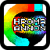

Games
This page is home to the various games and demos I developed. Utilizing the computational magic commonly known as a"computer", I was able to make these games where YOU are in charge of the action! Pressing the right buttons at the right time has never been so much fun. These games are guaranteed to change your life or your money back!

Chroma Cannon 2D - A top-down arcade style shooter featuring fancy square based graphics, bright colors, and in most cases a euphoric experience.
Play on Android! - Play on Your Computer! [mirror] - Play on Nintendo 3DS!
Play on Android! - Play on Your Computer! [mirror] - Play on Nintendo 3DS!
Chroma Cannon 3D - Reaching a new level of obsession, Chroma Cannon has now been recreated for the fourth time, this time using the Unity Game engine.
Official Release Page :: Built for NPAPI compatible browsers, PC, and Mac.
Official Release Page :: Built for NPAPI compatible browsers, PC, and Mac.
Solar System Demo - A not-to-scale model of the solar system if it only contained the Sun and the Earth with it's moon. Click on objects to focus the camera on them. Exciting!...
Play Online! with WebGL
Play Online! with WebGL

Roller Madness - Much Wow. Such Madness. Very Roller. Use WASD to move and pick up coins. Watch your score climb to the heavens as you avoid the onslaught of the menacing Orange Empire (Some imagination required). Can you contain your excitement??
Play Online! with WebGL
Play Online! with WebGL
Maintained by Ryan Magliola